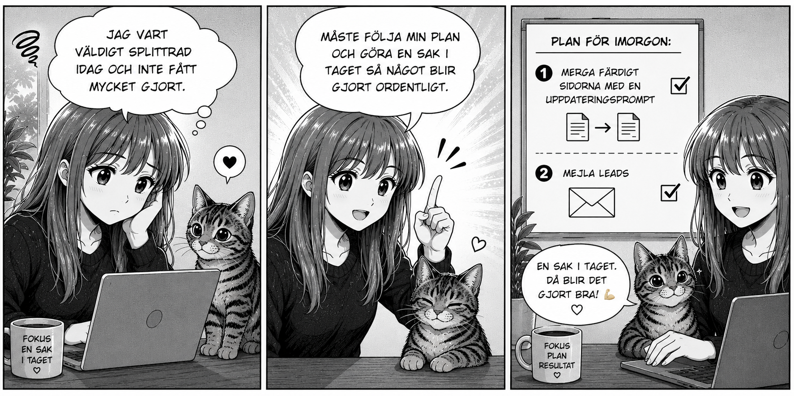

En sak i taget. Annars blir allt halvgjort.
Idag blev en sådan där dag där jag hoppade mellan för många saker samtidigt. Lite webbfix här, lite SEO där, lite mejl, lite idéer och plötsligt hade dagen gått. Klassisk småföretagarbuffé. Mycket på tallriken, oklart vad som blev middag.
Lärdomen är enkel: jag behöver följa min plan och göra en sak i taget. Inte för att det låter fint i en kalender, utan för att något faktiskt ska bli klart ordentligt.
Planen för imorgon är därför rak: först merga färdigt sidorna med uppdateringsprompten. Sedan mejla leads. Inget sidospår. Ingen “ska bara”. Ingen ny genial idé klockan 14:07.
Det är lite samma sak med hemsidor. För mycket samtidigt blir rörigt. En tydlig struktur, ett tydligt mål och ett steg i taget ger oftast bättre resultat.
Dagens webbtips: välj en sak som faktiskt flyttar dig framåt och gör den klart. Halvfärdiga idéer rankar dåligt. Både på Google och i livet.